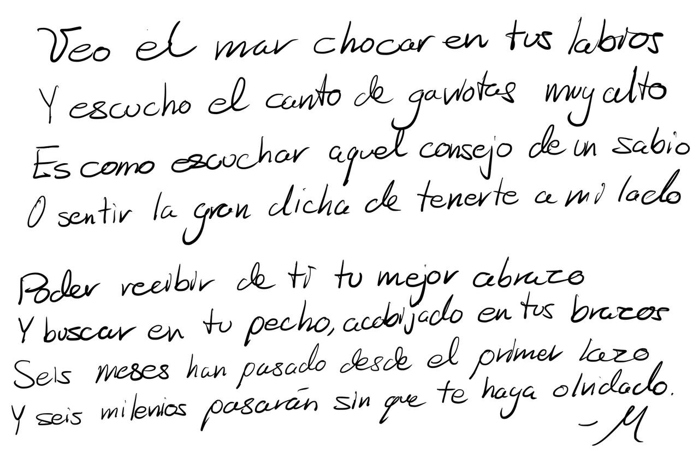

DESDE EL PRIMER DIA...
La historia comenzó un 29 de noviembre del 2020, una tarde soleada
y desértica que nos juntó en aquel lugar que muchos consideran mágico.
Desde mucho antes sentía que el mundo nos estaba atando y que a partir
de ahí comenzaría una historia inevitable.
Y DE REPENTE LLEGÓ EL PRIMER MES
Fueron los dias que comenzabamos a ver la distincion entre
amigos y mucho mas que amigos, fue cuando comenzaste a conocerme
mejor y yo comencé a conocerte mejor. Todo me empezaba a conectar
cada vez más y más contigo. Conocí a tu hermosa familia y tambien
entendí el origen de el corazon mas puro que jamas haya conocido.
PASO AL SEGUNDO MES COMO UN RAYO
Las cosas avanzaban rapido y de una manera increible. Descubrimos
nuestras virtudes y al mismo tiempo cada quien se conocía un poco más
a si miso. El tiempo y las circunstancias me dejaban cada vez más en claro
la calidad de mujer con la que comparto mis vivencias y lo afortunado que
soy de poderlas vivir con la mejor compañera del amor.
EL TERCER MES TOCABA LA PUERTA
Avanzaron los dias y lo unico que me queda son infinitas fotos y recuerdos
de la conexion que sentiamos cada vez que no paramos de reir, de llorar, de
sentir euforia y tristeza. Al final del día siempre regresabamos con todas las
ganas de amar y de abrazarnos el uno al otro. Mientras tanto yo seguía pensando
que era lo que hice bien para tener el privilegio de ser tu novio (y hasta el
momento no lo sé, pero estoy sumamente contento de serlo)
LLEGO EL CUARTO EN UN ABRIR Y CERRAR DE OJOS
Cada dia mas enamorado, mas ansioso de verte, mas satisfecho en mi
corazon y mas rejuvenecido en mi alma. Sabes tocar mi mente y mi pensamiento
de maneras que jamas habia imaginado, y todas aquellas preocupaciones se
esfumaban y cobraban vida en experiencias a tu lado y contigo.
EL QUINTO MES NOS ENVOLVIO EN UNO
Cada vez que te veía recordaba lo hermosa, lo bella, lo alta, lo elegante
lo bondadosa, lo cariñosa, lo amable, y seguía pensando ¿Cómo pueden caber
tantos detalles bellos y tantas virtudes en una sola mujer? Cuando te veo lo
vuelvo a pensar y lo seguiré pensando. Las flores de loto se quedan cortas con
el resplandor que produces en el atardecer de mi mente.

Y AHORA SEIS....
Seis meses, como en un parpadeo pasaron sin darme cuenta, estoy
muy emocionado por saber que pasarán en los proximos seis meses, Y
los seis siguientes, y los siguentes. Por que si de algo estoy seguro,
es que soy un hombre muy feliz a tu lado. Soy feliz desde que te conoci
y lo seré durante mucho tiempo más, por el simple hecho de que te encontré.
FELICES SEIS MESES MAI, TE AMO.
